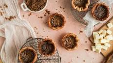

Butter Tarts

What is it?
A butter tart is an iconic and traditional Canadian dessert! It is a flaky pastry shell filled with a rich, sweet filling that ranges from soft and gooey to runny. There are so many variations of the butter tart that there are whole festivals dedicated to this sweet treat.
Mrs. Malcolm MacLeod's recipe was the first to be printed in the Royal Victoria Hospital Cook Book in the 1900's, but the butter tart has been around since the pioneers of the 1800's.
For the Pastry, you will need the following 6 ingredients:
- 2 1/4 cups Pastry Flour or All-Purpose Flour
- 1 tablespoon Brown Sugar
- 1/2 teaspoon Salt
- 1/2 cup Shortening, very cold and cut into cubes
- 1/2 cup Butter, very cold and cut into cubes
- 6 tablespoons Ice Water, enough to bring the dough together
For the Filling, you will need the following 7 ingredients:
- 1/2 cup Raisins, omit or subsitute with peacans, walnuts, or chocolate chips
- 1/4 cup Butter, melted
- 1/2 cup Brown Sugar, packed
- 1/4 teaspoon Salt
- 1/2 cup Corn Syrup
- 1 Egg, lightly beaten
- 1 teaspoon Vanilla extract